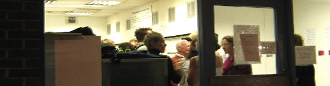

About ArtWash
ArtWash has been developed by Barry Reeves, Ann Rapstoff and Kay Sentence. We are cross-disciplinary artists with our own practices, who meet regularly to develop projects, explore ideas and support each other. We support and showcase unconventional work in unconventional spaces. We are interested in working with anyone interested in dialogue and questions concerning pushing the boundaries of arts practice.
ArtWash is researching its next stage of development, which will include further site and context based events and research into national and international exchange. ArtWash is working towards developing intercultural dialogue and expanding ways of working between artists, artist led groups and organisations.
Submissions and anyone interested in making contact
We are always interested in hearing from anyone who would like to work with us. This might include artist led groups, organisations and artists. Our deadline is ongoing. Anyone interested in this form of exchange are welcome to contact us; we would be interested to hear from you.
Site Credits
This site was created by Hugh Pryor
Hosted by Eye Division
|